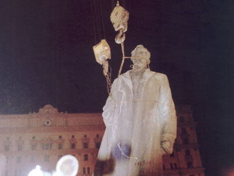
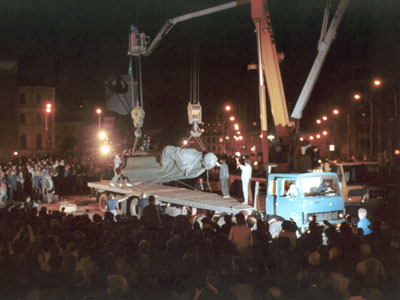
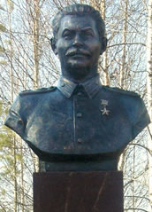
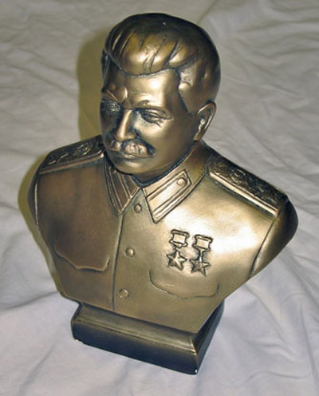
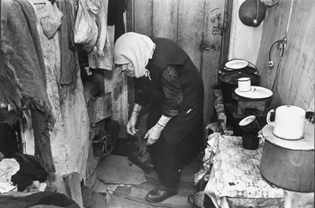
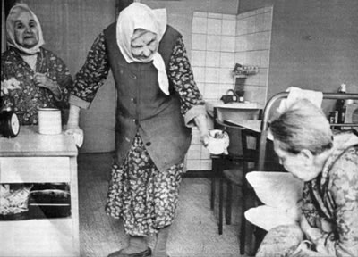
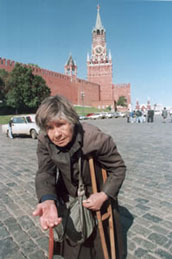
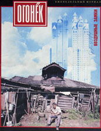

Online Exhibit → After the Soviet Union
Emerging from the Gulag

In the mid-1980s, Soviet leader Mikhail Gorbachev initiated a period of openness, called glasnost, in Soviet society. The government allowed formerly banned books, like Solzhenitsyn’s works, to be published. A torrent of memoirs, articles, and books denounced Stalin and Soviet crimes.
The Soviet public devoured every new revelation that exposed Communist repression. Throughout the country, they also removed numerous Soviet statues and monuments as symbols of the repressive past.
Since the early 1990s, however, the public debate over the legacy of the Soviet Union has become more complicated. Should Soviet monuments be replaced or preserved? More broadly, how should the Soviet past be remembered?


Some of the most well-known books and articles in Russian about the Gulag and Soviet repression.
Courtesy of the International Memorial Society.


Ogonyok magazine containing articles about the crimes of Stalin and the Communist Party.
Courtesy of the Gulag Museum at Perm-36.



Activists removing the statue of Felix Dzerzhinsky from its prominent place in Moscow next to the KGB offices. Dzerzhinsky founded the forerunner of the KGB under Lenin and helped to establish the Gulag.
Courtesy of the Gulag Museum at Perm-36.![the International Memorial Society, a nationwide organization founded to document and remember the Soviet terror, set a stone from the Solovetsky Camp, the main Soviet concentration camp under Lenin, just off Lubianka Square in Moscow. The Society believes strongly that the cruelties of the Soviet past must be remembered and confronted. They intended the stone to symbolically replace the Dzerzhinsky statue with a memorial to the victims of the police organizations he created. Yet, symbolizing also Russian ambivalence about dealing with this history, the stone sits not in the central location of the former statue, but in an out-of-the-way location on the edge of the square. Courtesy of the Gulag Museum at Perm-36. Courtesy of the Gulag Museum at Perm-36.](emerging-src/images/stone_detail.jpg)
the International Memorial Society, a nationwide organization founded to document and remember the Soviet terror, set a stone from the Solovetsky Camp, the main Soviet concentration camp under Lenin, just off Lubianka Square in Moscow. The Society believes strongly that the cruelties of the Soviet past must be remembered and confronted. They intended the stone to symbolically replace the Dzerzhinsky statue with a memorial to the victims of the police organizations he created. Yet, symbolizing also Russian ambivalence about dealing with this history, the stone sits not in the central location of the former statue, but in an out-of-the-way location on the edge of the square.
Courtesy of the Gulag Museum at Perm-36.

Stalin
Monument to Stalin placed in Mirny, Yakutia, in May, 2005. It celebrates Stalin’s leadership during World War II. Ironically, during Stalin’s reign this remote Siberian region was home to some of the harshest Gulag camps. According to the Memorial Society, between 2002 and 2005 there were 30 monuments of Stalin erected in the former Soviet Union and plans made to erect 20 more.
Courtesy of the State Yakutskoe-Sakha Information Agency.

Bust of Josef Stalin, Soviet Dictator, 1929-1953. This bust was purchased in November 2005 at a souvenir shop in one of Moscow’s largest hotels.
Courtesy of the Gulag Museum at Perm-36.After years of brutal repression, Russians had great expectations for prosperity. Political and economic reforms could not quickly address the serious long-term structural problems of the Soviet system.
In the 1990s, Russia was exposed as an unstable, weak, and vulnerable nation. Widespread political corruption, the outright theft of public assets, and rapid erosion in the standard of living for most Russians brought despair and cynicism throughout the country.
Today, Russian textbooks have become less critical of Stalin. Nostalgia for an idealized past has replaced facing historical reality.




Homeless and poor people in Moscow, 2000.
Courtesy of the ITAR-TASS News Agency.

A homeless woman in Moscow.
Courtesy of the ITAR-TASS News Agency.According to Forbes magazine, Russia ranks second only to the United States in the number of multi-millionaires. Among the 100 richest people in the world, 27 are Russians.

Ogonyok Magazine
A few well-connected Russians amassed fantastic fortunes during the period of widespread corruption when state-owned industries were privatized. These fortunes have been secreted away into off-shore bank accounts while most Russians have seen their standard of living decline precipitously.
Courtesy of the Gulag Museum at Perm-36.Online Exhibit | Reflections | Traveling Exhibit | Teacher Resources | About
© 2006–2021, Center for History and New Media, George Mason University.
In 1993, seven percent of Russians approved of Stalin’s leadership. Ten years later, the former dictator’s approval rating jumped to 53 percent. Why?